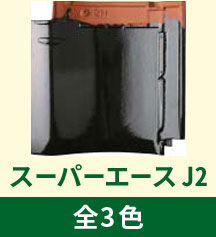

防災性編
耐久性編
日本の屋根といえば「瓦」。でも最近は「地震に弱い」という誤解の声がちらほら…。 そんな今こそ、進化した瓦「防災瓦」がオススメです。 熊本地震の調査結果によると、以前の瓦の屋根にはたくさんのズレ・脱落が見つかりましたが、「防災瓦」の屋根にはほとんど被害が見当たりませんでした。 では、防災瓦は一体何が違うのか…。そのヒミツ、お教えします！
以前の土葺き工法のように重い土を使わず、屋根重量を約半分程度に軽量化しました。
すべての瓦を釘やネジでしっかり固定。瓦同士も固定し、ズレや脱落を防止します。
屋根の棟部分を金具などでしっかり固定するガイドライン工法で崩壊を防ぎます。
倒れた家屋。散乱した瓦。阪神・淡路大震災や東日本大震災、そして2016年4月の熊本地震においても、様々なメディアを通じて「瓦屋根の家は地震に弱い」といった報道やイメージが一斉に広がりました。はたして瓦は本当に地震に弱いのでしょうか？
いいえ。それは大きな誤解です。

「旧耐震基準」にアリ
1981年に建築基準法の耐震基準が大幅に見直され、以前よりも約1.4倍の壁量が必要となりました。今回の熊本地震で倒壊した住宅を見ても、1981年以前の「旧耐震基準」の家がほとんど。倒壊の原因は耐震性の低さにあるのに、これらの古い住宅には日本古来の瓦屋根が多く使われていたことから、「重い瓦は地震に弱い」という誤ったイメージが定着してしまったのです。

「施工方法が古い」から
瓦屋根の施工方法は、長年「土葺き工法」や「釘打ち無しの工法」が一般的で、土の上に載っているだけ、桟木にひっかけてあるだけの不安定な状態でした。近年のガイドライン工法確立後も古い施工仕様がまだまだ残っており、今回の熊本地震でも瓦のズレや落下が多数発生しました。こうした被害状況も、瓦の耐震性の低さが指摘される一因となっています。
屋根の被害に大きな差が
写真左は2000年以降に建てられた家で、瓦屋根に被害なし。右は旧耐震基準で建てられた家で、屋根の施工方法も古く、瓦のズレや落下が多数見られます。
創業百余年。
鶴弥は粘土瓦のリーディングカンパニーとして、
弛まぬ挑戦を続けていきます。
1400年の時を重ね、日本の伝統となった粘土瓦。
焼き物ならではの重厚感と、葺き上がりの美しさが住宅に高級感を演出します。
鶴弥は明治20年の創業以来、瓦づくり一筋に歴史を重ねてきました。
日本の伝統を守りながら進化し続ける屋根材として、これからもみなさまに粘土瓦をお届けしていきます。
和風住宅はもちろん、シンプルモダンや洋風住宅にもぴったりの瓦をラインナップ。
スーパートライ110シリーズ
防災J形瓦シリーズ
- 

サンレイ［ティエラレッド
ティエライエロー ティエラホワイト］

スマート［クールブラック］
![サンレイ [ティエラホワイト]](image/p_index_product_011.jpg)
サンレイ [ティエラホワイト]
![スマート [銀鱗]](image/p_index_product_012.jpg)
スマート [銀鱗]
![エース [銀黒]](image/p_index_product_013.jpg)
エース [銀黒]
![エース [銀鱗]](image/p_index_product_014.jpg)
エース [銀鱗]


これまでの瓦
屋根が重く、
地震時にズレが…
非常に重い土葺き屋根。
たくさんの土を使っていたため、建物に大きな負荷がかかり、瓦がずれ落ちることも…。
鶴弥の防災瓦
土を使わず、屋根重量を
最大60％軽量化
鶴弥の防災瓦にすれば、屋根の重量も土葺き工法の約半分程度に。建物への負荷を大幅に軽減します。
固定不足で
瓦が飛散…
以前は釘止め基準が4枚に1枚程度で、大きな台風が来ると瓦が飛び、隣家に被害をもたらすことも…。
スーパーロック工法
でズレ・飛散防止
上下の瓦同士をがっちりロック。さらに瓦を釘で固定し、大地震の揺れや台風でも安心です。
棟の崩壊…
棟を銅線で固定している場合の多くが棟芯材なし。地震時に崩壊する可能性が…。
ガイドライン工法
で崩壊防止
パッキン付ステンレスねじで棟部をしっかり固定。科学的実験により実証された、耐震性の高い工法です。
※棟金具仕様は、地域によって仕様が異なります
サビない
色落ちしない
鶴弥の防災瓦は釉薬を施し、高温で焼き上げた粘土瓦です。
30年経過しても、サビない、色落ちしない。塗り替えメンテナンスがいらないことも特長のひとつです。
［コストとメンテナンスのイメージ］
屋根面積100m2で、メンテナンスコスト・シミュレーションを行いました。
※1 専門業者による定期点検を10年に1回程度を目安として実施するようにお願いします。
長持ちするから
塗替えコスト不要」
防災瓦の初期費用は、化粧スレートに比べると高いのは事実。しかし、20年、30年という単位でみると、200万円以上のコストメリットがあります。
高い「通気性」と
「断熱性」を実現
防災瓦の場合、野地面との間に空気層ができます。
そのため通気性もよくなり、熱を屋根裏へ伝えにくく、また室内の熱を逃しにくい働きがあります。


東日本大震災の被災地では、その後の災害公営住宅に数多くの「防災瓦」が採用されています。それは「防災瓦」が現行の耐震基準での耐震性が認められたのはもちろん、耐久性・メンテナンス性に加え、性能面・デザイン面でも評価されたことを証明しています。
和風住宅はもちろん、シンプルモダンや洋風住宅にもぴったりの瓦をラインナップ。
スーパートライ110シリーズ
防災J形瓦シリーズ
サンレイ［ティエラレッド
ティエライエロー ティエラホワイト］
スマート［クールブラック］
サンレイ [ティエラホワイト]
スマート [銀鱗]
エース [銀黒]
エース [銀鱗]